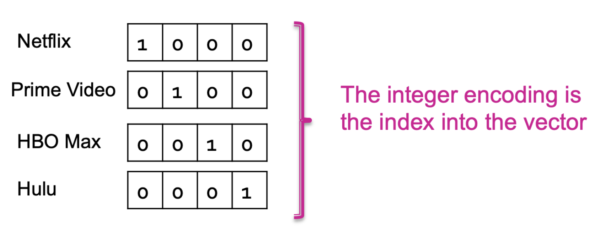
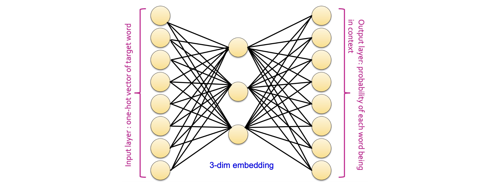

개요 (Outline)
이번 강의는 크게 네 가지 주제로 구성됩니다.
- 임베딩 학습 (Learning Embeddings): 데이터를 어떻게 표현할 것인가?
- Word2Vec: 단어 임베딩을 학습하는 대표적 방법
- Word2Vec 예시: 구체적인 수치 예제를 통한 이해
- Autoencoder: 일반적인 표현 학습 프레임워크
1. 임베딩 학습 (Learning Embeddings)
데이터를 어떻게 표현할 것인가? (How to Represent Data)
딥러닝의 중요한 목표 중 하나는 데이터 표현(data representation)입니다.
같은 정보라도 표현 방식에 따라 모델의 성능이 크게 달라질 수 있습니다.
- 좋은 데이터 표현이 주어지면, 단순한 알고리즘도 잘 작동합니다.
- 실제 데이터는 고차원(high-dimensional), 구조적(structured), 이산적(discrete), 무한히 많은(never-ending) 등 다양한 형태를 가집니다.
- 핵심 질문: 이런 데이터를 어떻게 고정된 길이의 특성 벡터 \(\mathbf{x}\)로 표현할 수 있을까요?
특성의 종류 (Types of Features)
머신러닝 관점에서 정보는 크게 두 종류로 나뉩니다.
수치형 데이터 (Numerical Data)
- 연속형(Continuous): 키, 몸무게 등
- 이산형(Discrete): 나이, 연도 등
범주형 데이터 (Categorical Data)
- 순서형(Ordinal):
Level = {초급, 중급, 고급}— 순서가 있음 - 명목형(Nominal):
Color = {빨강, 파랑, 초록}— 순서 없음
수치형 특성 (Numerical Features)
수치형 데이터는 적절한 정규화(normalization) 후 그대로 사용할 수 있습니다.
예를 들어 몸무게, 키, 발 사이즈를 함께 사용한다고 가정해 봅시다.
샘플 \(i\)의 특성값을 \(x_i\)라 할 때, 두 가지 대표적 정규화 방법이 있습니다.
표준화 (Standardization)
\[x_i' = \frac{x_i - \mu}{\sigma}\]
- \(\mu\): 전체 샘플의 평균, \(\sigma\): 전체 샘플의 표준편차
- 변환 후 데이터의 평균은 0, 표준편차는 1이 됩니다.
최소-최대 정규화 (Min-Max Normalization)
\[x_i' = \frac{x_i - x_{\min}}{x_{\max} - x_{\min}}\]
- \(x_{\min}\): 최솟값, \(x_{\max}\): 최댓값
- 변환 후 데이터는 \([0, 1]\) 범위로 압축됩니다.
범주형 특성 (Categorical Features)
범주형 변수를 인코딩하는 두 가지 대표적 방법이 있습니다.
아래 영화 데이터셋을 예시로 살펴보겠습니다.
| Title | Provider | IMDB Genres | Release Year | IMDB Rating |
|---|---|---|---|---|
| Stranger Things | Netflix | drama, fantasy, horror | 2016 | 8.7 |
| Cocomelon | Prime Video | animation, comedy, family | 2019 | 4.7 |
| 100 Foot Waves | HBO Max | documentary, sport | 2021 | 8.1 |
| I, Tonya | Hulu | biography, drama, comedy | 2017 | 7.5 |
정수 인코딩 (Integer Encoding)
- 각 범주 값에 정수를 하나씩 할당합니다.
- 예:
{Netflix→1, Prime Video→2, HBO Max→3, Hulu→4} - 한계: 범주 간에 순서가 존재하는 것처럼 암시합니다. (실제로는 없는데도)
- 순서형 변수(
Education = {학부, 석사, 박사})에는 어느 정도 의미가 있지만, 값들이 동일한 간격으로 떨어져 있다는 오해를 줄 수 있습니다. - 명목형 변수에는 적합하지 않습니다.
- 순서형 변수(
원-핫 인코딩 (One-hot Encoding)
이산값 하나를 이진 벡터(binary vector)로 표현합니다.
- Provider에 정수 인코딩을 먼저 적용한 뒤:
Netflix→1, Prime Video→2, HBO Max→3, Hulu→4 - 길이 4인 이진 벡터를 각 값에 부여합니다.
| Provider | 벡터 |
|---|---|
| Netflix | \([1, 0, 0, 0]\) |
| Prime Video | \([0, 1, 0, 0]\) |
| HBO Max | \([0, 0, 1, 0]\) |
| Hulu | \([0, 0, 0, 1]\) |
- 정수 인코딩 값이 벡터의 인덱스(index)로 사용됩니다.
- 서로 다른 범주 간에 거리가 모두 동일하므로, 순서 문제가 해결됩니다.

멀티-핫 인코딩 (Multi-hot Encoding)
원-핫 인코딩의 확장으로, 변수가 동시에 여러 값을 가질 수 있을 때 사용합니다.
- 예: 영화 한 편이 여러 장르(28개 중 복수)를 가질 수 있음.
- Stranger Things는 Drama, Fantasy, Horror 세 가지 장르 → 해당 인덱스 위치에 모두 1을 표시합니다.

최종 인코딩 결과 (Final Encodings of Movies)
각 특성의 인코딩 결과를 연결(concatenate)하면 다음과 같은 행렬이 완성됩니다.
- Provider(원-핫, 4차원) + IMDB Genres(멀티-핫, 28차원) + Release Year(수치형) + IMDB Rating(수치형)을 이어 붙입니다.
- 추천 시스템(Recommender Systems)의 아이템 프로파일(item profile) 생성과 동일한 방식입니다.

⚠️ 단점 (Cons)
이 방식에는 세 가지 근본적인 한계가 있습니다.
- 희소성(Sparse): 대부분의 값이 0입니다.
- 고차원(High-dimensional): 범주 수가 늘수록 벡터 길이가 기하급수적으로 증가합니다.
- 의미적 유사성 부재(No semantic similarity): Horror와 Thriller는 실제로 비슷하지만, 서로 다른 위치의 비트이므로 벡터 간 거리가 동일하게 멀어집니다.
임베딩 (Embedding)
이러한 단점을 극복하기 위해 임베딩(embedding)이 필요합니다.
임베딩이란: 고차원의 원본 특성을 저차원의 연속적인 벡터 공간으로 변환하는 것입니다.
좋은 임베딩이 갖춰야 할 조건은 다음과 같습니다.
- 밀집(Dense): 부동소수점 값으로 채워져 있습니다. (희소 벡터 문제 해결)
- 저차원(Low-dimensional): 수천 차원 이하로 압축됩니다. (고차원 문제 해결)
- 의미적 유사성 포착(Semantic similarity): 의미가 비슷한 개념은 임베딩 공간에서도 가까이 위치합니다. (유사성 부재 문제 해결)
좋은 임베딩이 주어지면, 추천, 클러스터링 등에서 매우 단순한 모델만으로도 우수한 성능을 낼 수 있습니다.

표현 학습 (Representation Learning)
표현 학습(Representation Learning)은 임베딩을 학습하는 머신러닝 태스크입니다.
- 비지도 학습(Unsupervised): 명시적인 정답 레이블이 없습니다.
- 많은 알고리즘이 표현 학습기(embedder)로 해석될 수 있습니다.
SVD를 이용한 표현 학습
행렬 \(M\)의 특이값 분해(SVD):
\[M = U \Sigma V^\top\]
- \(U\): 행(row) 임베딩 (스케일을 무시하면 \(\Sigma\) 생략 가능)
- \(V\): 열(column) 임베딩
UV 분해(UV Decomposition)
\[M = UV^\top\]
- \(U\)와 \(V\): 각각 행과 열의 임베딩
두 방법 모두 입력 \(M\)으로부터의 재구성 오차(reconstruction error)를 최소화하는 방식으로 좋은 표현을 정의합니다.
임베딩을 위한 신경망 (Neural Networks for Embeddings)
문제 \(P\)를 위한 큰 신경망 \(f_\theta\)가 있다고 가정해 봅시다.
이 신경망은 특정 문제에 특화된 표현 학습기로 해석할 수 있습니다.
\(f_\theta\)를 두 부분으로 나눌 수 있습니다:
\[f_\theta(\mathbf{x}) = h_\phi\bigl(g_\psi(\mathbf{x})\bigr) \quad \text{where } \theta = \psi \cup \phi\]
- \(g_\psi(\mathbf{x})\): 입력 데이터의 학습된 표현(learned representation). 보통 마지막 레이어 직전 출력을 가리킵니다.
- \(h_\phi\): \(g_\psi(\mathbf{x})\)를 입력으로 받는 다운스트림 모델(downstream model).
- \(\mathbf{x}\): 입력 데이터의 초기 표현.
즉, 신경망 학습 과정에서 자동으로 문제 \(P\)에 적합한 저차원 표현 \(g_\psi(\mathbf{x})\)를 배우게 됩니다.
2. Word2Vec
단어 임베딩 (Word Embedding)
Q: 어떻게 단어의 좋은 임베딩을 찾을 수 있을까요?
- Word2Vec은 2013년 Google에서 개발되었으며, 현재는 LLM으로 대체되었지만 근본 원리를 이해하는 데 매우 중요합니다.
- 핵심 아이디어: 비슷한 문맥(context)에서 등장하는 단어는 비슷한 의미를 가집니다.
- “apple”이 “tree”와 함께 자주 등장한다면 → 두 단어의 임베딩이 비슷해야 합니다.
- 단어의 사용 방식(usage)을 바탕으로 임베딩을 학습합니다.
문제 정의 (Problem Definition)
각 단어를 원-핫 벡터 \(\mathbf{x}\)로 표현합니다.
어휘가 {apple, banana, cookie}라면:
\[\mathbf{x}_{\text{apple}} = [1, 0, 0]\]
단어 \(w\)의 임베딩은 다음과 같이 정의됩니다:
\[\text{embedding}(w) = W^\top \mathbf{x}_w\]
- \(W\): 크기 \(V \times N\)인 가중치 행렬(weight matrix)
- \(V\): 어휘 크기(vocabulary size). 위 예시에서는 3.
- \(N\): 임베딩 차원(embedding dimension).
- 목표: 좋은 \(W\)를 찾는 것.
이는 각 단어에 \(N\)차원 벡터를 학습하는 것과 동일합니다.
타겟 단어와 문맥 단어 (Target and Context Words)
아이디어: 단어 \(c\)가 단어 \(t\)의 문맥에서 자주 등장하면, \(t\)와 \(c\)는 가깝습니다.
문맥의 정의 (윈도우 기반): - 하이퍼파라미터 윈도우 크기 \(L\)을 설정합니다. - 각 타겟(target) 단어를 기준으로 - 왼쪽 \(L\)개, 오른쪽 \(L\)개 단어가 문맥(context) 단어입니다. - 슬라이딩 윈도우를 이동시키며 모든 (타겟, 문맥) 쌍을 수집합니다.
타겟-문맥 예시 (Target and Context Words: Example)
문장 “I read sci-fi books and drink orange juice”에서 \(L = 2\)로 설정합니다.

예를 들어: - 타겟 “books” → 문맥: (books, read), (books, sci-fi), (books, and), (books, drink) - 타겟 “and” → 문맥: (and, sci-fi), (and, books), (and, drink), (and, orange) (단, L=2)
프록시 태스크 (Proxy Task)
Word2Vec의 학습 목표는 다음 로그 우도(log likelihood)를 최대화하는 것입니다.
\[\log P(c_1, \cdots, c_{2L} \mid t)\]
여기서 타겟 단어 \(t\)가 주어졌을 때 문맥 단어들의 결합 확률을 최대화합니다.
문맥 단어들이 조건부 독립(conditionally independent)이라고 가정하면, 곱셈 법칙에 의해:
\[\log P(c_1, \cdots, c_{2L} \mid t) = \sum_{j=1}^{2L} \log P(c_j \mid t)\]
- 각 문맥 단어 \(c_j\)의 로그 확률의 합으로 분해됩니다.
- \(t\)의 임베딩을 이용해 \(P(c_j \mid t)\)를 모델링하는 것이 핵심입니다.
프록시 태스크: 분류 (Proxy Task: Classification)
\(P(c_j \mid t)\)는 실질적으로 확률 \(\Pr[C = c_j \mid t]\)입니다.
랜덤 변수 \(C\)는 어휘의 \(V\)개 단어 중 하나가 될 수 있으므로:
문맥 단어 예측은 \(V\)-way 분류 문제입니다.
예: 어떤 재료가 나무, 금속, 고무 중 무엇인지 예측하는 것과 유사합니다.
소프트맥스 분류기 (Softmax Classifier)
분류를 위해 소프트맥스(Softmax)를 사용합니다.
- 추가 파라미터 행렬 \(W'\) (크기 \(N \times V\))를 도입합니다.
- 타겟 단어 \(t\)에 대해:
\[\hat{\mathbf{y}} = \text{softmax}\bigl(W^\top \mathbf{x}_t \cdot W'\bigr)\]
- \(W^\top \mathbf{x}_t\): \(N\)차원 임베딩 벡터
- \(W^\top \mathbf{x}_t \cdot W'\): \(V\)차원 로짓(logit) 벡터
소프트맥스 함수의 정의:
\[\text{softmax}_k(\mathbf{z}) = \frac{\exp(z_k)}{\sum_{j} \exp(z_j)}\]
- 출력은 양수이며 합이 1인 확률 분포를 형성합니다.
- \(\hat{y}_k\): 모델이 예측한 \(k\)번째 단어가 문맥 단어일 확률.
소프트맥스 분류기: 전체 구조 (Softmax Classifier: Illustration)
전체 구조를 신경망으로 이해하면 다음과 같습니다.

- 입력층: 크기 \(V\)의 원-핫 벡터 \(\mathbf{x}\)
- 은닉층(임베딩 층): \(W_{V \times N}\)에 의한 \(N\)차원 임베딩
- 출력층: \(W'_{N \times V}\)에 의한 \(V\)차원 출력 + 소프트맥스 → 각 단어가 문맥 단어일 확률
학습 과정 (Training Process)
- 말뭉치(corpus) 준비: 문서 집합 \(\mathcal{D} = \{d_1, d_2, \ldots\}\)를 수집합니다.
- 토크나이징(Tokenizing): 모든 문서를 토큰으로 분리하고 어휘를 구축합니다.
토크나이징 방법
다양한 방법이 있습니다: - WordPiece - BPE (Byte Pair Encoding) - \(n\)-gram (가장 단순): 연속된 \(n\)개의 단어(또는 글자)를 하나의 토큰으로 취급. - "I have an apple" → \(n=2\)일 때 {"I have", "have an", "an apple"} - 1-gram: 문장을 단어 단위로 분리하는 것과 동일.
크로스 엔트로피 손실 (Cross-Entropy Loss)
파라미터 \(W\)와 \(W'\)는 크로스 엔트로피 손실(cross-entropy loss)을 최소화하여 갱신됩니다.
\[\mathcal{L}(y, \hat{y}) = -\sum_{k=1}^{V} y_k \log \hat{y}_k\]
- \(\hat{y}\): 소프트맥스 분류기의 \(V\)차원 출력 (예측 확률 분포)
- \(y\): 예측하고자 하는 실제 문맥 단어의 원-핫 타겟 벡터
\(y\)가 원-핫 벡터이면 정답 인덱스 \(k^*\)에 대해서만 \(y_{k^*} = 1\)이고 나머지는 0이므로, 수식은 실질적으로:
\[\mathcal{L} = -\log \hat{y}_{k^*}\]
즉, 정답 단어의 예측 확률의 로그를 최대화하는 것입니다.
학습 데이터 수집 (Training Data)
슬라이딩 윈도우를 문서 위로 이동시켜 (타겟, 문맥) 쌍 데이터를 수집합니다.
완전한 알고리즘 (Complete Algorithm)
Word2Vec의 전체 학습 알고리즘은 다음과 같습니다.
확률적 경사 하강법(SGD, Stochastic Gradient Descent)을 사용합니다.
1. 학습 데이터 수집 및 준비
2. For each epoch:
3. For each pair (x, c):
4. W ← W - η · ∇_W ℒ(W, W', x, c)
5. W' ← W' - η · ∇_W' ℒ(W, W', x, c)
6. Return W- \(\eta\): 학습률(learning rate)
- 최종적으로 \(W\) (타겟 임베딩 행렬)만 반환하고, \(W'\)는 버립니다.
3. Word2Vec 예시 (Word2Vec: Example)
문서와 어휘 (Document and Vocabulary)
다음 하나의 문서가 있다고 가정합니다.
- 문서:
"I read sci-fi books and drink orange juice" - 1-gram 어휘:
{"I", "read", "sci-fi", "books", "and", "drink", "orange", "juice"} - 어휘 크기: \(V = 8\)
각 단어에 원-핫 벡터를 부여합니다:
| 단어 | 원-핫 벡터 |
|---|---|
| “I” | \([1,0,0,0,0,0,0,0]\) |
| “read” | \([0,1,0,0,0,0,0,0]\) |
| \(\vdots\) | \(\vdots\) |
| “juice” | \([0,0,0,0,0,0,0,1]\) |
아키텍처 (Architecture)
임베딩 차원을 \(N = 3\)으로 설정합니다.
\[W: V \times N = 8 \times 3, \quad W': N \times V = 3 \times 8\]

임베딩 추출 (Getting Embeddings)
타겟 단어가 “books”일 때, 원-핫 벡터는:
\[\mathbf{x} = [0, 0, 0, 1, 0, 0, 0, 0]^\top\]
가중치 행렬 \(W\)가 아래와 같다면:
\[W = \begin{bmatrix} 1 & 1.2 & 1.2 & 0.5 & 1.1 & 1 & 0.3 \\ 2 & 3 & 1.1 & 2.3 & 0.6 & 1 & 1.2 \\ 2 & 2 & 0.5 & 2 & 1 & 2 & 0.7 \\ \end{bmatrix}\]
“books”의 임베딩은 \(W\)의 4번째 열이 선택됩니다 (원-핫의 1이 4번째 위치에 있으므로):
\[W^\top \mathbf{x} = [0.5, \; 2.3, \; 2.2]\]
- 이처럼 원-핫 벡터와의 행렬 곱은 결국 \(W\)의 특정 행(row)을 조회하는 임베딩 룩업(embedding lookup)과 동일합니다.
아키텍처: Books (Architecture: Books)

문맥 단어 예측 (Predicting Context Words)
이제 두 번째 가중치 행렬 \(W'\)를 이용해 문맥 단어를 예측합니다.
\[W' = \begin{bmatrix} 1 & 2 & 2 & 0 & 0.7 & 1.3 & 1 & 0.1 \\ 1.2 & 0.5 & 1 & 1 & 0.3 & 2 & 0.6 & 1 \\ 1 & 1.6 & 0.5 & 1.4 & 2.3 & 1 & 1 & 0.6 \\ \end{bmatrix}\]
“books”의 임베딩 \([0.5, 2.3, 2.2]\)에 \(W'\)를 곱하면:
\[[0.5, 2.3, 2.2] \cdot W' = [1.0, \; 5.6, \; -2.4, \; 5.3, \; 6.1, \; 7.4, \; 3.0, \; 3.5]\]
이 벡터에 소프트맥스를 적용해 각 단어가 문맥에 등장할 확률로 변환합니다.
\[\hat{y}_k = \frac{\exp(z_k)}{\sum_j \exp(z_j)}\]
- 위 예시에서 타겟 “books”의 문맥 단어 정답이 “drink”라면, 정답 원-핫 벡터의 6번째 위치가 1입니다.
- 모델 예측값 \(\hat{y}_6 = 0.627\)이 이미 높게 나왔으며, 학습을 통해 이 값을 더 높이는 방향으로 \(W\)와 \(W'\)가 갱신됩니다.
Word2Vec 요약 (Word2Vec: Summary)
- Word2Vec은 어휘의 모든 단어에 임베딩을 부여합니다.
- 핵심: 임베딩 차원 \(N \ll\) 어휘 크기 \(V\) (저차원 압축)
학습 완료 후의 임베딩 예시:
| 단어 | 임베딩 (7차원으로 표현된 예) |
|---|---|
| man | \([0.6, -0.2, 0.8, 0.9, -0.1, -0.9, -0.7]\) |
| woman | \([0.7, 0.3, 0.9, -0.7, 0.1, -0.5, -0.4]\) |
| king | \([0.5, -0.4, 0.7, 0.8, 0.9, -0.7, -0.6]\) |
| queen | \([0.8, -0.1, 0.8, -0.9, 0.8, -0.5, -0.9]\) |

4. Autoencoder
Autoencoder 개요
Word2Vec은 Autoencoder 아키텍처의 일종으로 해석될 수 있습니다.
Autoencoder는 일반적인 표현 학습을 위한 신경망입니다.
Autoencoder는 두 구성 요소로 이루어집니다.
- 인코더(Encoder) \(f\): 데이터 차원 \(D\)에서 임베딩 차원 \(M\)으로 매핑
- \(D \gg M\)임을 가정합니다 (차원 축소).
- 디코더(Decoder) \(g\): 임베딩 차원 \(M\)에서 데이터 차원 \(D\)로 복원
- \(f(\mathbf{x})\)를 원래 공간으로 되돌립니다.
Autoencoder의 목표 (Goal of Autoencoders)
목표: \(f\)와 \(g\)를 찾아 재구성 오차(reconstruction error)를 최소화합니다.
\[\mathcal{L}(\mathbf{x}) = \| g(f(\mathbf{x})) - \mathbf{x} \|^2\]
(여기서는 \(L_2\) 노름을 예로 들었으나, 다양한 변형이 존재합니다.)
의미 해석
- \(f(\mathbf{x})\): \(\mathbf{x}\)로부터 배운 임베딩.
- 이 임베딩으로부터 원본 \(\mathbf{x}\)를 최대한 복원할 수 있어야 합니다.
- 따라서 \(f(\mathbf{x})\)는 \(\mathbf{x}\)의 가장 핵심적인 정보를 압축하여 담고 있어야 합니다.
- 결론: \(f(\mathbf{x})\)를 \(\mathbf{x}\)의 효과적인 임베딩으로 사용할 수 있습니다.
Autoencoder 아키텍처 (Architecture)
\(f(\mathbf{x}) = x^\top W\), \(g(\mathbf{v}) = v^\top W'\)로 설정하면, 아키텍처는 Word2Vec과 약간 다릅니다.
Word2Vec과의 차이점:
| Word2Vec | Autoencoder | |
|---|---|---|
| 입력 \(\mathbf{x}\) | 원-핫 벡터 | 임의의 연속 벡터 |
| 출력 \(g(f(\mathbf{x}))\) | 소프트맥스 적용 | 소프트맥스 미적용 |
| 학습 목표 | 문맥 단어 예측 | 입력 재구성 |

병목(Bottleneck)이 핵심!
- 병목층의 차원 \(M\)이 데이터 차원 \(D\) 이상이면(\(M \geq D\)) 네트워크가 입력을 그냥 통째로 기억(memorize)해버릴 수 있어 의미 있는 표현을 배우지 못합니다.
- 반드시 \(M < D\) 조건이 필요합니다.
SVD와 Autoencoder (SVD as an Autoencoder)
SVD와 Autoencoder는 유사한 목표를 가집니다.
\[M = U \Sigma V^\top\]
| SVD | Autoencoder | |
|---|---|---|
| 재구성 목표 | 저랭크 SVD의 \(U\Sigma V^\top\)로 재구성 오차 최소화 | \(f\)와 \(g\)로 재구성 오차 최소화 |
| 행 임베딩 | \(U \in \mathbb{R}^{m \times r}\) (column-to-concept) | \(W\) 에 대응 |
| 열 임베딩 | \(V^\top \in \mathbb{R}^{r \times n}\) (concept-to-row) | \(W'\) 에 대응 |

SVD 개선: 비선형성 도입 (Improving SVD)
Autoencoder는 비선형성(nonlinearity)을 통해 SVD를 능가할 수 있습니다.
- \(f\)와 \(g\)를 다층 신경망(deep neural networks)으로 설계합니다.
- 병목층(\(f\)의 출력)에 활성화 함수(activation function)를 적용합니다.
- SVD는 선형 변환만 가능하지만, Autoencoder는 비선형 변환을 통해 더 풍부한 표현을 학습합니다.
- 층이 깊어질수록 계층적(hierarchical)이고 추상적인 특성을 포착합니다.

요약 (Summary)
| 주제 | 핵심 개념 |
|---|---|
| 임베딩 학습 | 원-핫 인코딩의 한계(희소, 고차원, 유사성 없음) → 저차원 밀집 벡터로 해결 |
| Word2Vec (Skip-Gram) | 타겟 단어로 문맥 단어를 예측하는 \(V\)-way 분류. 소프트맥스 + 크로스엔트로피 손실 |
| 학습 절차 | 슬라이딩 윈도우로 (target, context) 쌍 수집 → SGD로 \(W, W'\) 갱신 → \(W\) 반환 |
| Autoencoder | 인코더 \(f\) + 디코더 \(g\)로 재구성 오차 최소화. 병목 차원(\(M < D\))이 핵심 |
| SVD와의 관계 | SVD는 선형 Autoencoder와 동치. 비선형 활성화 + 다층 구조로 SVD 능가 가능 |